17. CP objects tagging by additional attributes
A user can manage custom sets of "key-values" attributes for data storage and files. These custom attributes could be used for an additional description of the object and make the search process easier by using attributes as tags.
To edit object's attributes, you need to be an OWNER of the object. For more information see 13. Permissions.
You can also manage attributes via CLI. See 14.2. View and manage Attributes via CLI.
How to navigate to Attributes panel of different objects:
Note: if you were changing the data storage file's attributes, you could return to data storage's attribute by clicking 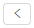 control.
Add attributes
- Navigate to the Attributes panel of a selected object.
- Click the + Add button.
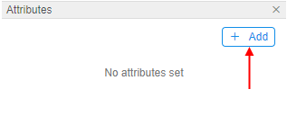 - Enter an attribute key and value.
- Click the Add button:
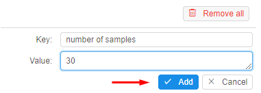 - Added attribute will appear at the Attributes panel:
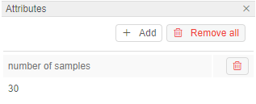
Add JSON object into the attribute value
Also, you can add more complex attributes than just strings.
In the "Value" field you can specify a raw JSON object, that will be transformed into the pretty-view table.
View an example:
- Navigate to the Attributes panel of a selected object.
- Click the + Add button.
- Enter an attribute key.

- Enter the
JSONobject as the attribute value, click the Add button:
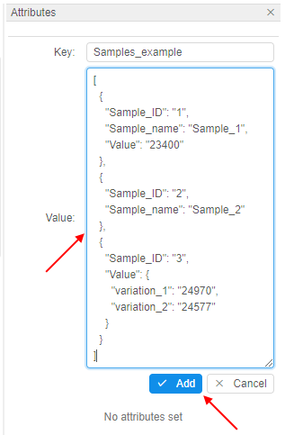 - Added attribute will appear at the Attributes panel:
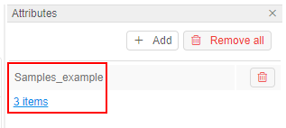
As the value - the link will be displayed that shows the summary count of first-levelJSONrecords. - Click the value link - the pretty-view detailed table will be opened for the added attribute:
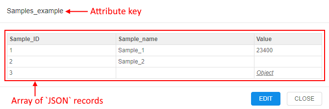 - If the raw
JSONhas more than one level, downstream records will be shown as the link Object. You can hover over it and view the downstream records:
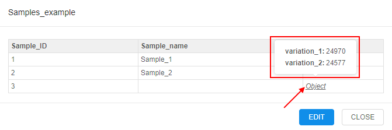 - If you want to edit such attribute value - click the EDIT button. The raw
JSONwill be opened:
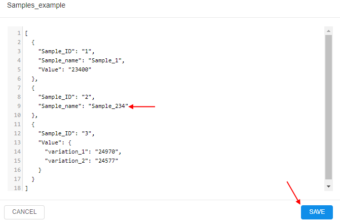
You can edit it and click the SAVE button to save changes.
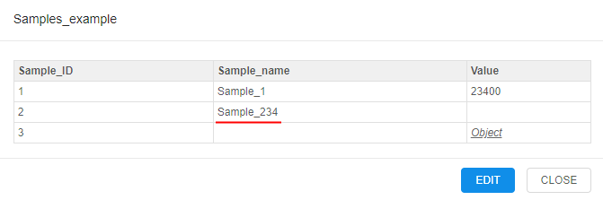
Edit attributes
- Navigate to the Attributes panel of a selected object.
- Click the attribute key or value field:
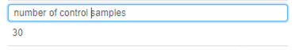 - Change the attribute key or value:
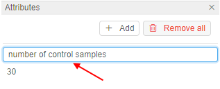 - Press the Enter key or just click out of the active field.
- Edited attribute will appear at the Attributes panel:
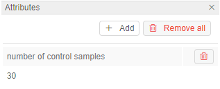
Delete attributes
- Navigate to the Attributes panel of a selected object.
- Click the Trash icon to delete a particular attribute.
Note: click the Remove all button to delete all attributes.
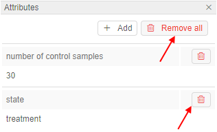
Automatic tagging
In the Cloud Pipeline files are automatically tagged with the following attributes when uploading them to the data storage via CLI/GUI (see a CLI example 14.3. Manage Storage via CLI):
| Name in GUI | Name in CLI | Value |
|---|---|---|
| Owner | CP_OWNER | The value of the attribute will be set as a user ID. |
| Source | CP_SOURCE | The value of the attribute will be set as a local path used to upload. Note: this attribute is set only if a file is uploaded through CLI. |
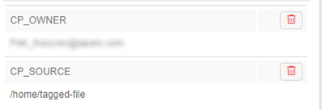
Note: The exception is that the storage is based on FS share. Files in such data storage don't have attributes at all.
Besides, files are automatically tagged with the following attributes when uploading them to the data storage as a result of a pipeline run:
| Name in GUI | Name in CLI | Value |
|---|---|---|
| Owner | CP_OWNER | User ID |
| Source | CP_SOURCE | Local path used to upload data |
| RunID | CP_RUN_ID | Run ID |
| Pipeline | CP_JOB_NAME | Pipeline name |
| CP_JOB_ID | Pipeline ID | |
| Pipeline version | CP_JOB_VERSION | Pipeline version |
| Pipeline configuration | CP_JOB_CONFIGURATION | Pipeline configuration |
| Docker image | CP_DOCKER_IMAGE | Tool (docker image) that was used |
| Compute | CP_CALC_CONFIG | Instance type |
Example of the Attributes panel for the such file:
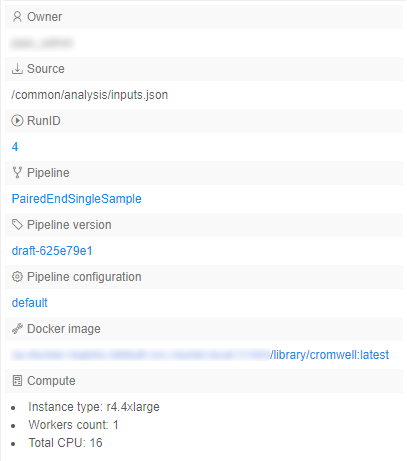